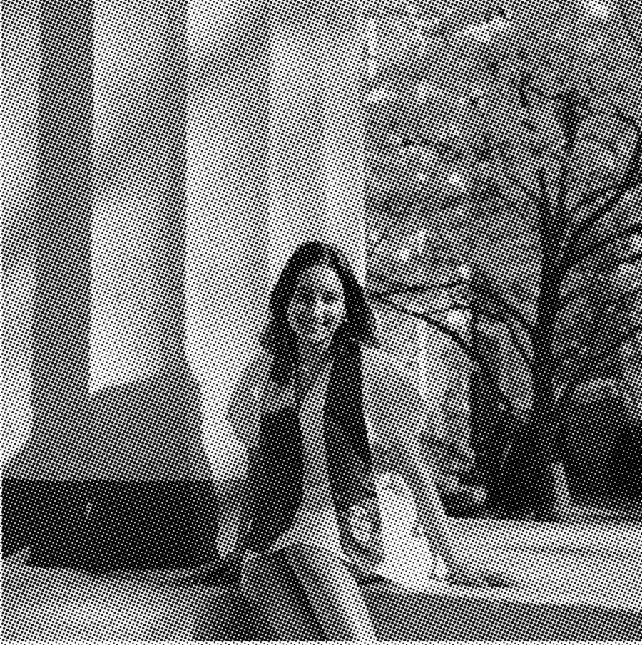
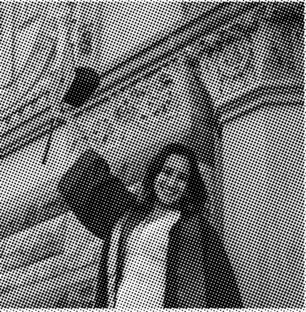

Computer science by day, literary arts by night — a double degree, and a plan to build things people love.
By the Dispatch StaffPhotographs by a very patient friend

PROVIDENCE — On a bright afternoon on College Hill, with the dogwoods out and the whole campus in motion, Pranavi Ram walked through the Van Wickle Gates for the last time as a student. She left with two degrees: a Bachelor of Science in Computer Science and a Bachelor of Arts in Literary Arts.
“Brown has truly been my dream school,” she said afterward. “It gave me four years full of growth, creativity and community.” The pairing of the two subjects, she added, was never a compromise. One taught her to build; the other taught her what was worth building, and how to say so.
Ms. Ram credits two organizations with getting her to the gates: Rewriting the Code, which supports women in technology, and the Emma Bowen Foundation, whose fellowship placed her in the media industry. “The best organizations eva,” was how she put it, in a statement that this newspaper has elected to print as written.
Special thanks went to Claribel Nunez, “for always checking in on me and being a steadfast guide,” and to the friends, family and teachers who, in her words, cheered her on every step of the way.
Asked what comes next, she did not hesitate. “I’m excited for what comes next,” she said, which the reporter noted was not technically an answer. Pressed, she described a career at the seam of design and engineering — the person in the room who can both draw the thing and ship it.
Continued on Page A12

By the Education Desk
What does a literary arts degree do for a computer scientist? Quite a lot, according to the people who have worked with her. Interfaces, it turns out, are mostly sentences: the label on the button, the line that explains what happened, the order in which a screen tells its story.
Her thesis adviser, reached by telephone, declined to be quoted but was audibly pleased.
Inside
Design, A8. A reimagined rail for HBO Max, and what a surprise is for.
Technology, B1. Mixr, a DJ app that teaches beginners to count bars.
Business, B4. Pinnables sends browser annotations to coding agents.
Arts, C1. On lace, light, and the hour before dinner.
Weather
Sun through the west windows from four o’clock. Dust visible in the beams. High 72.